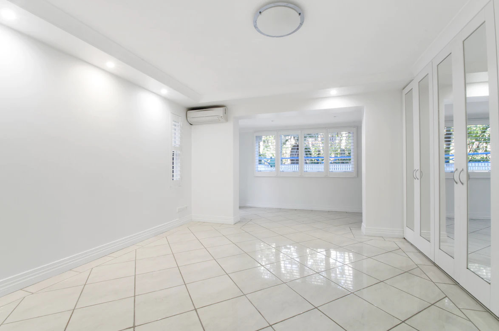
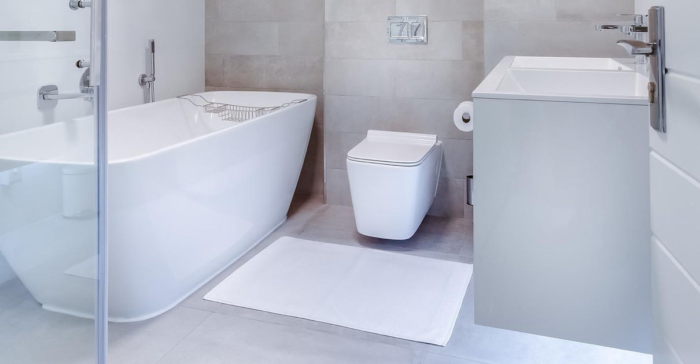

Wir von den Profireinigern haben uns auf die Unterhaltsreinigung spezialisiert. Lassen Sie Ihre Wohnung oder Ihr Haus von unserem Fachpersonal regelmäßig reinigen.
Wir sind Ihr zuverlässiges Reinigungsunternehmen. Wir setzen besonderes Augenmerk auf die Reingigung von Apartments, die über AirBnB, Booking, Kurzzeitmiete oder Kurzzeitwohnen vermietet werden.
Unsere gründliche Endreinigung eines Apartments nach dem Checkout beinhaltet folgende Dienstleistungen (Reinigungsmaterial wird von uns mitgebracht):
Bettwäsche-Service: Wir stellen gerne bei Bedarf auch frische Bettwäsche, Handtücher und sonstige Accessoires von uns bereit.
Melden Sie sich bei uns unter sales@profireiniger.at, und wir werden uns Ihrer Wünsche annehmen. Es gibt immer eine Lösung für Ihre Bedürfnisse. Dafür sorgt das Profireiniger-Team schnell und unkompliziert.
Wenn nötig sind wir schnell und flexibel vor Ort, im Idealfall aber Ihr ständiger Partner - damit Ihre Liegenschaft, ob geschäftlich oder privat, immer tip top und gepflegt dasteht. Denn Hausreinigung kann mehr sein als regelmäßiges Putzen und Wienern von Offensichtlichem. Unser Profiteam der Hausreinigung kann für Sie auch Böden und Keller entrümpeln, Hausflure sauber halten, den Winterdienst übernehmen oder die schmutzigen Folgen von Umbauten, Renovierungen oder Wasserschäden beseitigen.
Wir reinigen für Sie Ihr Wohnzimmer, Schlafzimmer, Kinderzimmer, Küche, Bad, Gang/Flur mit Teppichboden und/oder Glattboden und/oder Kachelboden.
Wir erstellen gerne ein individuelles Angebot ganz nach Ihren Bedürfnissen. Schreiben Sie uns unter office@profireiniger.at.
Die Fensterreinigung passt gut zur Unterhaltsreinigung und könnte gemeinsam damit durchgeführt werden. Gerne reinigen wir auch Ihre Fenster (hier erfahren Sie mehr zur Fensterreinigung).

"Mancher rennt dem Glück nach und weiß nicht, dass er es zu Hause
hat."
- Kolping, Deutscher Geistlicher
